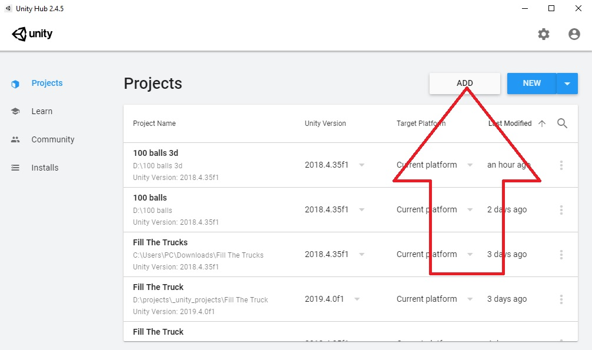
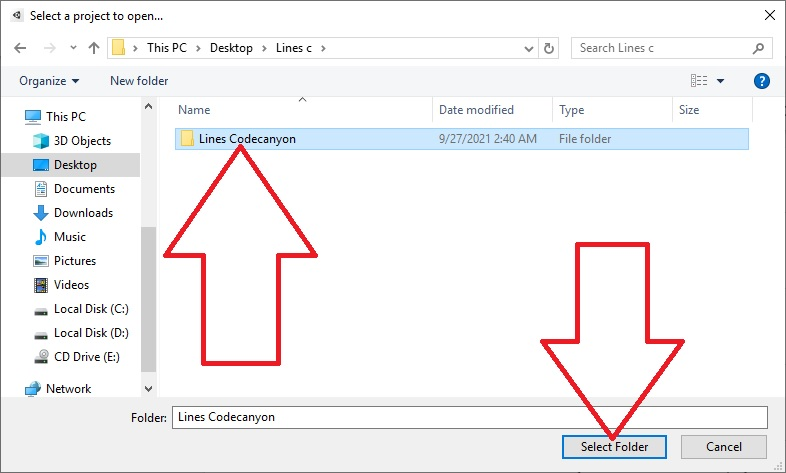
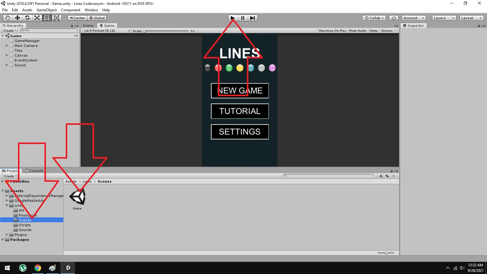
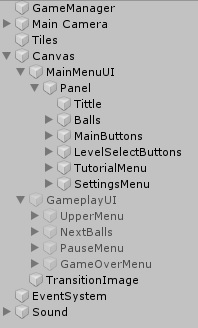
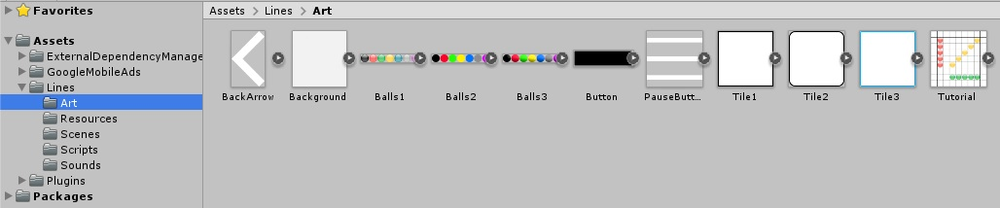
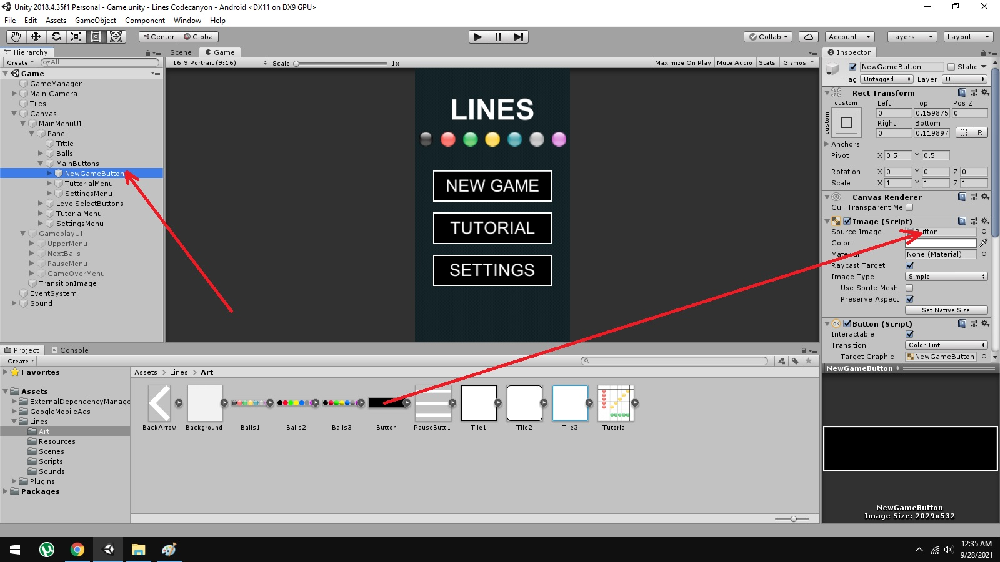
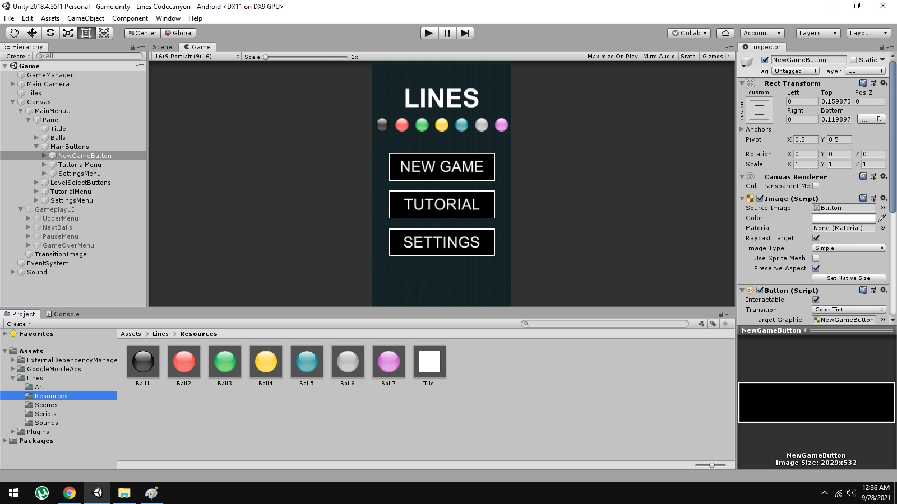
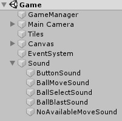
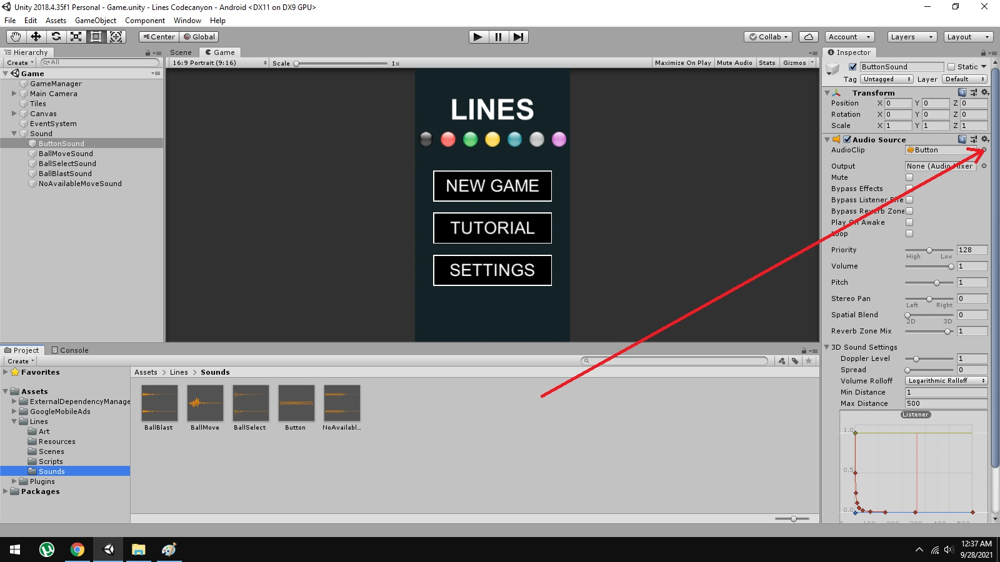
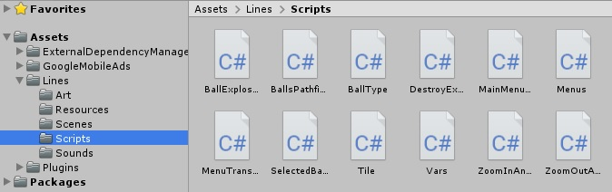

Created: 28/9/2021
By: Aleksa Racovic
Email: aleksa.racovic@gmail.com
Thank you for purchasing my game template. If you have any questions that are beyond the scope of this help file, please feel free to email via my user page contact form here. Thanks so much!
First you need to unzip the file that you downloaded from the codecanyon, after that open unity hub and click on the "add" button.
After that find the folder that's created when you unzipped the file, click on it, and then click on the "Select folder" button
It it very easy to setup this projects, all you need to do is to double click on the "Game" scene, it is located inside the "Scenes" folder
Once you open this scene whole project will be ready. Press the "play" button to test if it's working.
To reskin this project follow the next steps.
All UI is inside the canvas and it is divided into "MainMenuUI" and "GameplayUI". "MainMenuUI" is the first screen you will see when the player opens the game, it contains the game tittle, new game, tutorial and settings buttons. GameplayUI is the UI that is shown when the player starts the game.
All UI elements are inside "Art" folder
If you want to change UI image on any object just click on it and drag and drop your image into "Source Image"
All prefabs that are instantiated throughout the game are located inside the "Resources" folder.
All game sounds are attached to "Sound" gameobject
To change them, import your sound files into "Sound" folder, click on the sound item that you want to change and than click on "AudioClip" menu and choose your sound.
All scrpits are inside "Scripts" folder
If you need to edit/change some code here is what you need to know about scripts:
Thank you so much for purchasing this game template. I'd be glad to help you if you have any questions relating to this game template. I'll do my best to assist. If you have a more general question relating to the themes on ThemeForest, you might consider visiting the forums and asking your question in the "Item Discussion" section.
Aleksa Racovic